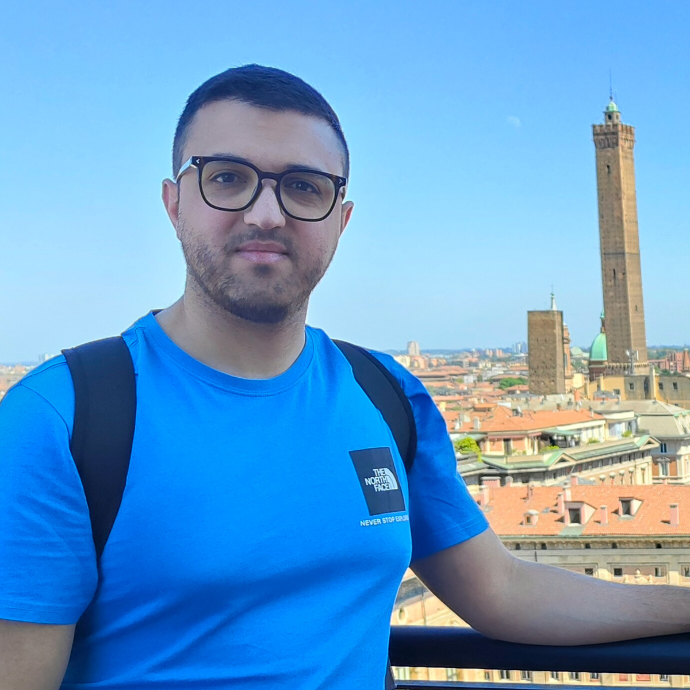

Ciao, sono Luigi
ho 29 anni, mi piace molto la tecnologia e da oltre 5 anni lavoro nel mondo del web design e del digital
marketing.
Ho iniziato il mio percorso professionale come freelance, per poi entrare in un’agenzia web di Catania, dove mi sono occupato principalmente della realizzazione e gestione di siti web attraverso WordPress, continuando al tempo stesso a seguire i miei clienti in privato.
Con il tempo, però, ho sentito sempre più l’esigenza di ampliare le mie competenze tecniche. In particolare, voglio colmare alcune lacune legate allo sviluppo, approfondendo tecnologie come JavaScript, migliorando le mie conoscenze di CSS e avvicinandomi maggiormente al mondo back-end. È proprio lo sviluppo, infatti, il percorso che oggi mi interessa maggiormente e sul quale vorrei costruire il mio prossimo percorso professionale.
Ad oggi lavoro esclusivamente come freelance, seguendo direttamente i miei clienti e occupandomi di progetti digitali a 360°. Oltre a voler incrementare ulteriormente le mie competenze, vorrei anche fare esperienza all’interno di un’azienda e avere l’opportunità di lavorare come sviluppatore, confrontandomi con un team e con progetti più strutturati.
Tra le diverse possibilità di formazione online ho scelto Epicode perché, ancora prima di iniziare il Master, ho avuto modo di approfondire online le esperienze e il grado di soddisfazione di diversi studenti che l’hanno scelta come scuola di formazione tech. Questo mi ha convinto che potesse essere il contesto giusto per consolidare le mie competenze e fare un passo concreto verso il mondo dello sviluppo.
| Nome | Anno |
|---|---|
| Diploma Alberghiero | 2017 |
| Esercito italiano | 2018 |
| Master Grafica Pubblicitaria & Web Design | 2019 |
| Inizio lavoro Freelance | 2021 |
| Esperienza Web Agency Catania | 2022 |
| Freelance | 2023 ad oggi |